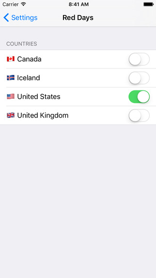

Holidays are always a pain when you have a distributed team from lots of different countries and backgrounds. It is certainly something we’ve run into. Our simple solution was a count-down to the next public holiday or “Red Day”. These are officially recognized public holidays in various counties; Iceland, US, UK and Canada.
Holidays are always a pain when you have a distributed team from lots of different countries and backgrounds. It is certainly something we’ve run into. Our simple solution was a count-down to the next public holiday or “Red Day”. These are officially recognized public holidays in various counties; Iceland, US, UK and Canada.
At a quick glance we can see how many days it is until there is a public holiday.
Red Days is available now for the iPhone and Apple Watch. You can select the countries you are interested in and get a count-down of days until you can relax.

Apologies for the app
We know that this isn’t the most in-depth app every created. It scratched an itch we had and because of that, we’ll certainly keep it up-to-date. But you are probably wondering, this is just a list, why not make it an .ics calendar file or a webpage? Why spend the time to make it a compiled app that goes through a centralised authority?
Good question! We’ve been trying to expand our knowledge and learning swift has been part of that. To help us learn, we’ve been putting it to good use on things we want to see exist and Red Days is an early attempt at this. We are not big android users, so we’re not learning how to develop for that platform, but we are huge fans of the web. And we apologies that this is an app and not just an offline website.
We did start this off as an offline website. You can view Red Days online and save it to your phone’s home screen. That way no matter what platform you are on, you can see the holidays. Right now the list is only Icelandic holidays, so unless you live here or are a big fan of the countries, it isn’t going to be that useful to you. No worries, we’ve open sources all the HTML and Javascript code for you to copy, update and host yourself. Just clone the Red Days git repo, change the dates in the json file to your country’s holidays and localise all of the text you need.
Pros & Cons
There are lots of interesting things you get by making this a webpage over a native app. Firstly, I can update the webpage “app icon” dynamically. In the repo, you’ll see that the image is actually a PHP file which compiles the next holiday date and renders a new image. The phone will try to update it’s cache every once and a while and when it does, it will get the next holiday date as the “app icon”. This is something only a few Apple apps can do.
The other major advantage of the web is that it is pretty much write-once run anywhere. Any device that has a browser and supports html manifests will be able to use this “app”. There is no review process or gatekeepers.
The major disadvantage for most phones is that the web is NOT a first-class citizen. As we developed the Red Days app for iOS, we wanted to not just replicate the webpage, but actually learn more about the features of the phone that are not available to the browser. On the phone, this consisted of the Notification Center. It isn’t possible to get a webpage to be running in there, that is app-land only. So we wrote an extension which allows for Red Days to be there. You can swipe open the notification centre and quickly see the next public holiday. With iOS10, this should also be available when you Force Press the app icon, again, something the web page can’t do. (Although if the App Icon is the next holiday date, the Force Press is redundant)
The other aspect which fascinates us is the Apple Watch. It hasn’t gotten as much traction as some have hoped. The interesting thing about the watch is that it is Internet Connected, but there is no Web Browser. That means you need to create your own artisanal browsers to fetch your data. For us, holidays are computable locally, so there is no internet connection needed, but there is also no browser to render the HTML which meant our own app for the Apple Watch. This is just a list of holidays in chronological order, something that could be done easily if there were access to a browser. The more interesting thing is the complications. The small apps that run on the watch face itself. Now at a quick glance you can see how many days until the next day off. No need to launch any apps, it is right there next to the date and time. This is something that can’t currently be done. Not because it isn’t technically possible, but just because the web isn’t a first class citizen on the watch.
We do apologise for making this an app, you can always view it as a webpage, fork it, update it and make improvements that scratch your itches, but for us we learnt about all the details where the Web isn’t available (yet) and we’re using that knowledge to inform future decisions.
In the mean-time, there are a few holidays coming up that we need to plan for, so excuse us while we go enjoy the sun.